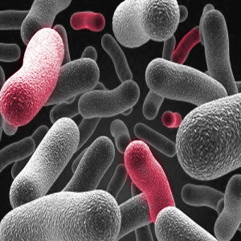

海洋汚染と細菌の現状
海洋汚染の原因であるプラスチックは、様々な生物を長距離輸送する人口の筏になっています。
イギリスのスターリング大学自然科学研究科生物環境科学の研究によると、プラスチックは外来種や侵入種の侵入を促進しているとのことです。
また他の研究ではマイクロプラスチックから約150種類もの菌種が見つかり、大腸菌やシュードモナス･アンギリセプチカなどの病原菌を含んでいると発表しました。

この研究は5年以上前のもので、2021年では対策が打たれて解決されているかもしれないが、何かと水に触れる機会の多い夏には十分気を付けていきましょう。
海洋汚染と細菌の対策
この記事では大きく2つの対策が有効であると考えています。
1つ目にイデオネラ・サカイエンシスの利用の実現化です。皆さんは「イデオネラ・サカイエンシス」を知っていましたか。
2019年、日本の堺市で見つかり「ポリエチレンテレフタレート（ＰＥＴ）」の分解を行うというのです。
現在も研究が進められているため具体的な行動は明記できませんが、期待度は高いでしょう。
2つ目に石油分解菌の利用です。実は石油分解菌は海洋、陸水、土と広く存在しているため、
分解効率の上昇や培養を進めていけば1つ目と合わせて現状の改善に期待してもいいのではないのでしょうか。